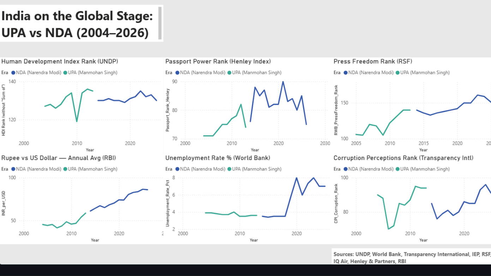
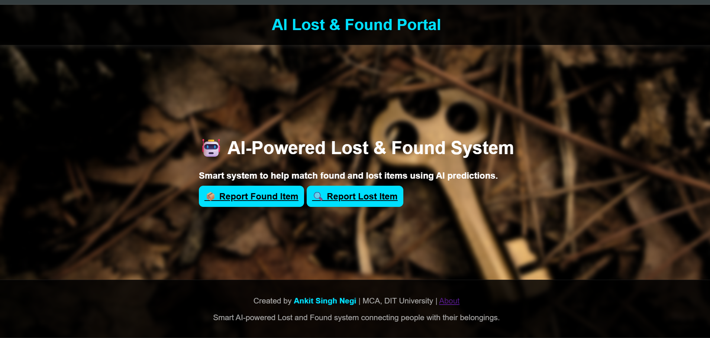
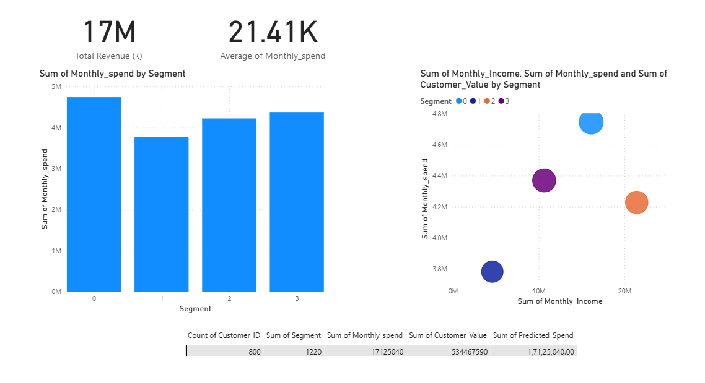

I'm Ankit, an MCA student who builds data pipelines and dashboards that hold up.
I work mostly in Python, SQL, Snowflake, and Power BI — cleaning messy datasets, building models, and shipping dashboards people actually use. Based in Dehradun, India.
Designed and executed a Snowflake star schema (warehouses, stages, secure data-sharing views) for 12,000+ retail banking transactions, with a Python ETL pipeline, live FX-rate API integration, and a data quality framework achieving a 94.9% clean-data pass rate. Diagnosed and resolved real data-loading issues during live execution.
SnowflakePythonSQLAgile
94.9%
data quality pass rate
2026

India Rankings Analytics: UPA vs NDA
End-to-end analytics pipeline comparing India's standing across 9 global indices (HDI, Corruption, Press Freedom, Poverty and more) spanning 2004–2026, sourced from UNDP, World Bank, and RBI. Delivered via an interactive Power BI dashboard and stakeholder-ready presentation.
PythonSQLExcelPower BI
22yr
of data, 9 indices
2025

AI Lost & Found System
Flask web app with a MySQL backend using cosine similarity to predict item owners. Responsive UI with real-time search and full CRUD, cutting manual lookup time significantly.
FlaskMySQLPython
~85%
match accuracy
2025

Retail Customer Analytics & Demand Forecasting
Analyzed 10,000+ retail transactions and applied K-Means clustering to segment customers into 4 actionable groups. Built 3 interactive Power BI dashboards covering revenue, churn risk, and demand forecasts.
PythonSQLPower BIK-Means
10K+
transactions analyzed
03Education & certifications
Master of Computer Applications (MCA)
DIT University, Dehradun
2025 – Present · GPA 7.48/10.0
B.Sc. — Physics, Mathematics & IT
Kumaun University, Nainital
2020 – 2023
SQL (Basic) — HackerRank Certificate of Accomplishment, July 2026
Prepare Data for Analysis with Power BI — Microsoft, Dec 2025
Cleared IBPS PO & SBI PO Preliminary exams — top percentile in quant & reasoning
Strong academic record in ML and data science coursework